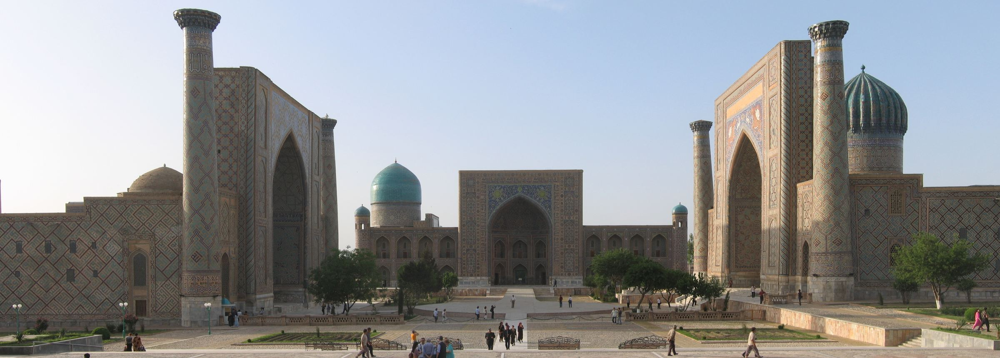
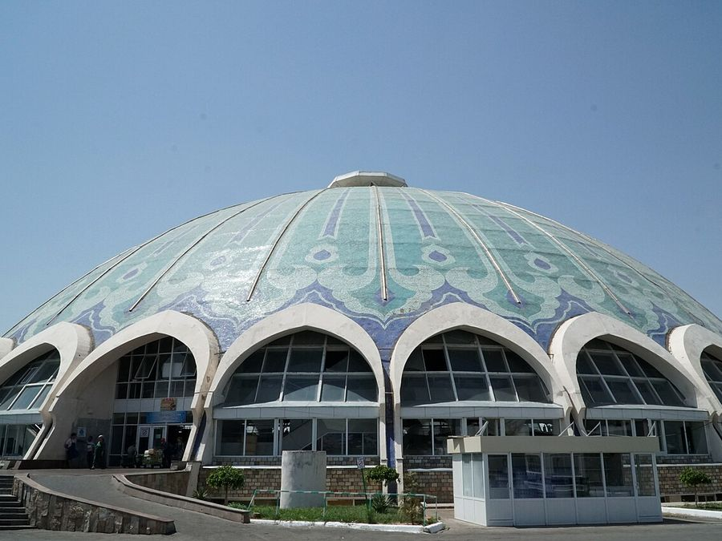
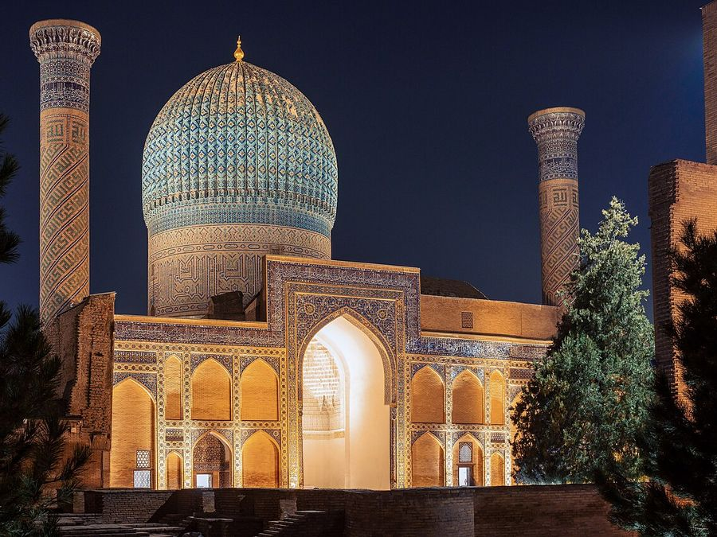
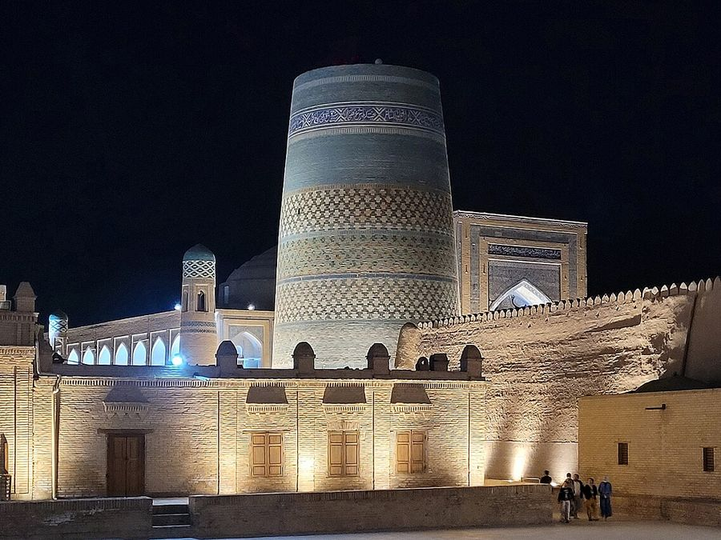

Uzbekistan, one courtyard at a time
Small-group walks through Tashkent, Samarkand and Khiva with guides who grew up there. You see the full price before you book.
Choose a tourRegistan Square, Samarkand · three madrasahs built 1420–1660 · drag to look around, double-click to reset
Three routes
From a morning in Tashkent's bazaar to three days inside the walls of Khiva.

Old Tashkent Walk
Chorsu Bazaar under its blue dome, Khast Imam Square and the quiet mahalla streets of the old city — on foot, with tea.

Registan & Gur-e-Amir
The three madrasahs of Registan Square at sunset, and the ribbed blue dome over the tomb of Amir Timur after dark.

Khiva Itchan Kala
A whole city inside clay walls: the unfinished Kalta Minor, palaces with carved wooden columns, sunrise from the ramparts.